“熱い想いを”最終プレゼン！見えてきた唐津の未来 茶ッカソンin Karatsu 2017/9/16
《最終日Shibuya》
「人が多い！」
茶ッカソンin Karatsu3日目、最終プレゼンの地、渋谷は3連休の初日ということもあり、人で溢れかえっています。日本列島に台風18号が接近しており、空模様は怪しくなっています。
わがCチームは、開会前に集まり、最終プレゼン時のコンセプトワードについて話し合いました。結局決まらぬまま、不安にさいなまれつつ会場入りしました。
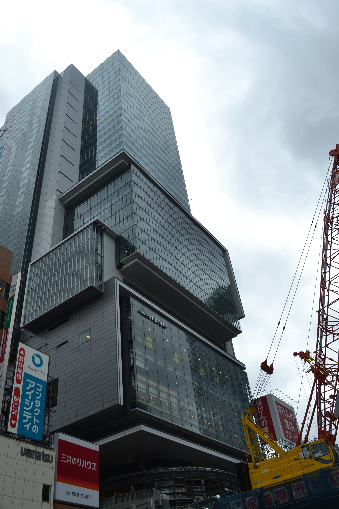
そびえ立つ渋谷ヒカリエ。こちらの8階イベントスペースにて最終プレゼンが行われます。
︎ ヒカリエ8階でも座禅でスタート
エレベーターホールの薄いカーテンに仕切られただけのスペースに畳が敷き詰められ、茶ッカソンのロゴ畳が迎えてくれます。
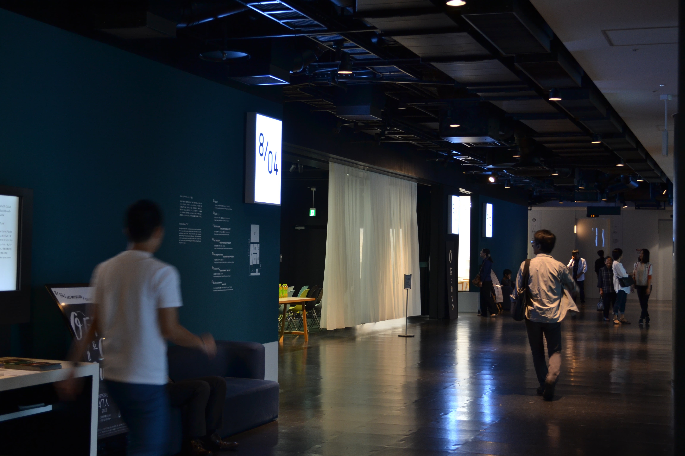
何事かと中を覗きこむ人の姿もチラホラ。
正午、伊藤園の角野さんから改めて「茶ッカソン」の精神などが語られ、頭と心のリセットのための座禅でスタート。
ヒカリエのど真ん中に畳が敷かれ、30人以上が座禅をしているわけですから、相当シュールな絵柄だったかと。外からの視線が最初気になったのですが、呼吸に集中していくと、不思議と気持ちが静かになっていきました。
審査員であり、本日1日お付き合いくださる玉樹真一郎さんがあいさつに立たれた後、ファシリテーターの若宮さんから再度「コアバリュー」についてのおさらいがあり、本日最初のワークへ。
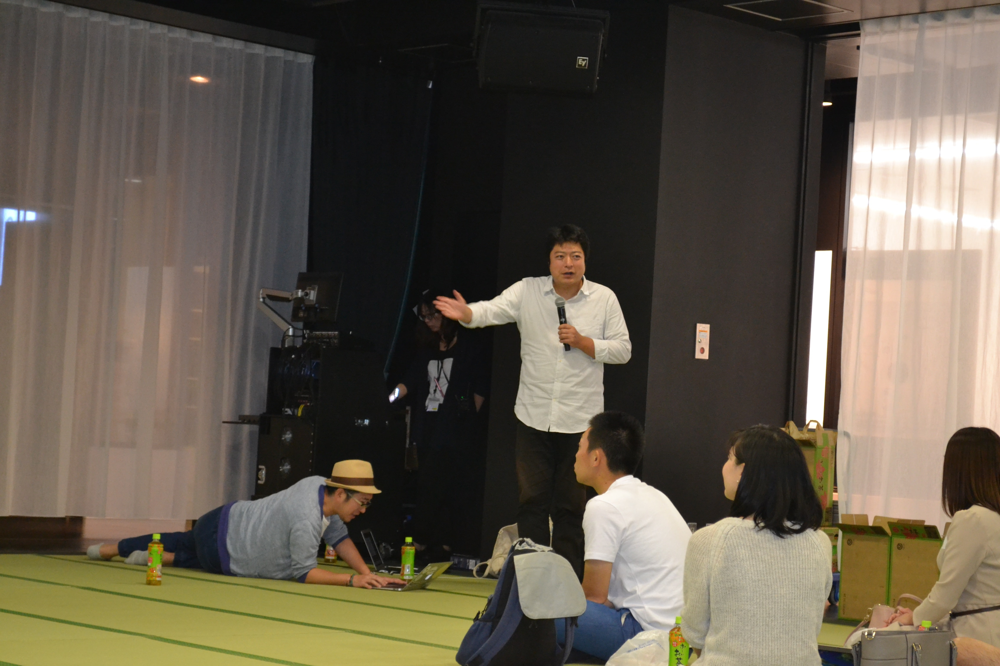
任天堂で「Wii」の企画・開発にかかわった玉樹真一郎さん。現在は故郷の青森県八戸にて独立・起業され、全国を縦横に駆け回っておられます。
“唐津にとって”一番良いものをどうそぎ落として見つけるか
これまではさまざまな意見を出し合うことに主眼が置かれていましたが、最終プレゼンに向かうために必要不可欠な、「取捨選択」の段階に入ります。
「唐津のいま」から「目指すこと（伸ばすところ）」と「やらないこと（やめるところ）」を整理していきます。
制限時間は45分！チームごとに今日まで話し合ってきたことをもとに整理していきました。
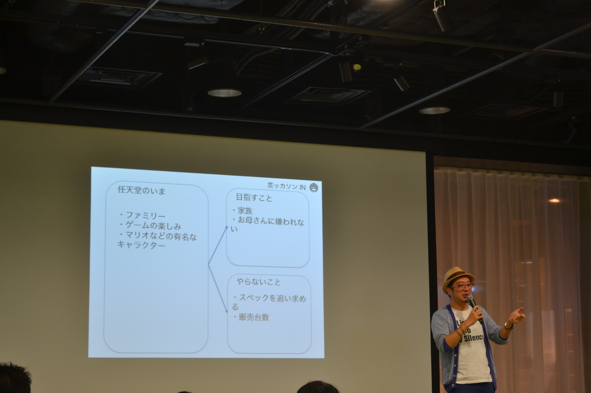
Wiiの事例をもとに本日のワークを説明する若宮さん
次のワークでは、考えたコンセプトが「唐津に住む方にとって」「唐津に来る方にとって」どうなのかを35分で考えていきました。
そして最後のワークは「ストーリーをつくる」！（50分）
これまでにやってきたことやチームで辿った思考を物語にしていきます。
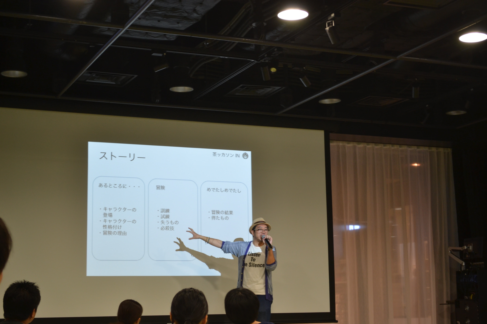
最終プレゼン前の思考の整理としてストーリーを組み立てます。
コンセプトワードで大苦戦をしていた私たちCチームが最終的に選んだのは、ネガティブワードからの出発でした。
「日本全国の統計数値を見ると、唐津市は収入も学力も比較的低いけれど、出身者や住んでいる人は地元が好きで、誇りを持っている。これはなぜなんだろう」という点を掘り下げていくことにしました。
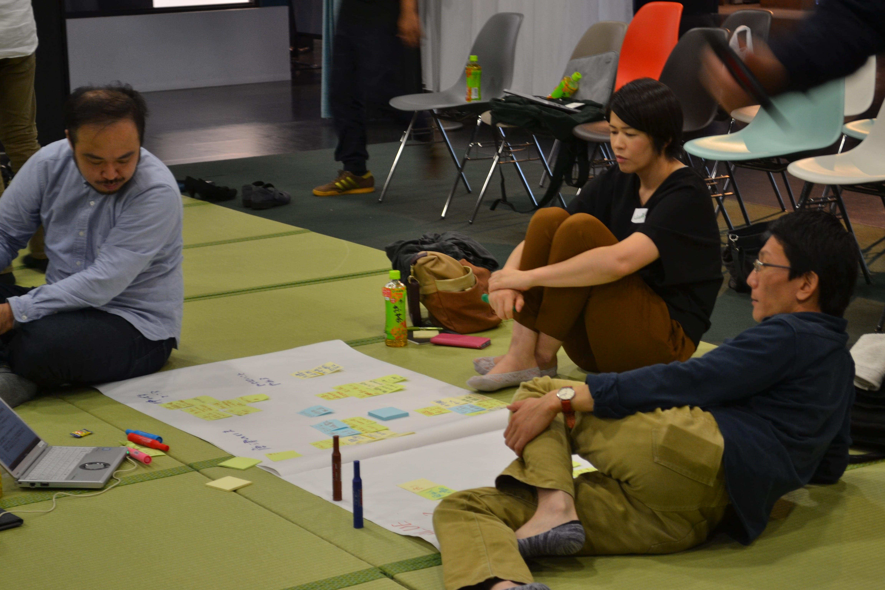
長丁場の茶ッカソン。畳の上で思い思いにくつろげるのも魅力のひとつ。この頃になると、まったく周囲の視線などは気にならなくなっていました。
最後は「唐津はどうなったのか」「どうなっていきたいのか」を突き詰め、物語をハッピーエンドに仕立て上げなくてはいけません。
チームごとにそれぞれの物語を完結させていきました。
市長不在のおかげ（？）で優勝チームの副賞が大幅アップ！
プレゼン発表は17時開始。あと50分しかありません！
各チーム、資料を仕上げつつ、プレゼンの練習に入ります。泣いても笑ってもプレゼンに与えられた時間は各チーム1回3分のみ。参加者全員必死です。
そしていよいよプレゼン発表！なのですが、なんと峰唐津市長が台風18号の対策本部待機のため、Skypeでの参加に。
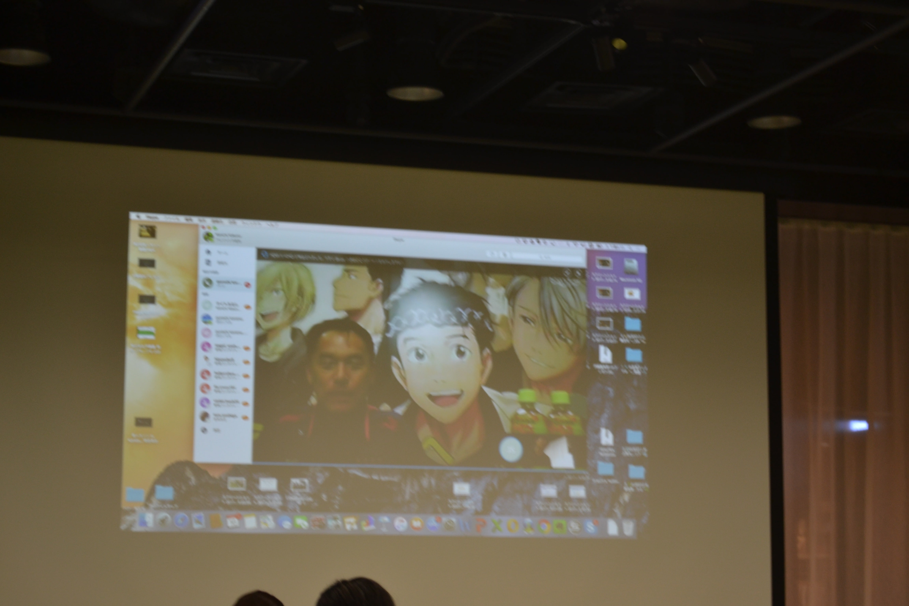
唐津が舞台のひとつになっているアニメ「ユーリ!!! on ICE」の勇利くんたちをバックにSkype参加の峰市長。
今回審査員として参加して下さったのは、事業構想大学院大学学長で宣伝会議の取締役でもある田中理沙さん、さきほどもご紹介しました青森県八戸市から「わかる事務所」の玉樹真一郎さん、伊藤園広告宣伝部の横田部長。
また、観覧に来られていた「茶ッカソン」の生みの親でもあるniftyの河原あずさんも急遽審査員として参加してくださることになりました。
当日参加のオーディエンスの方々にも見守られ、最終プレゼンが始まりました。
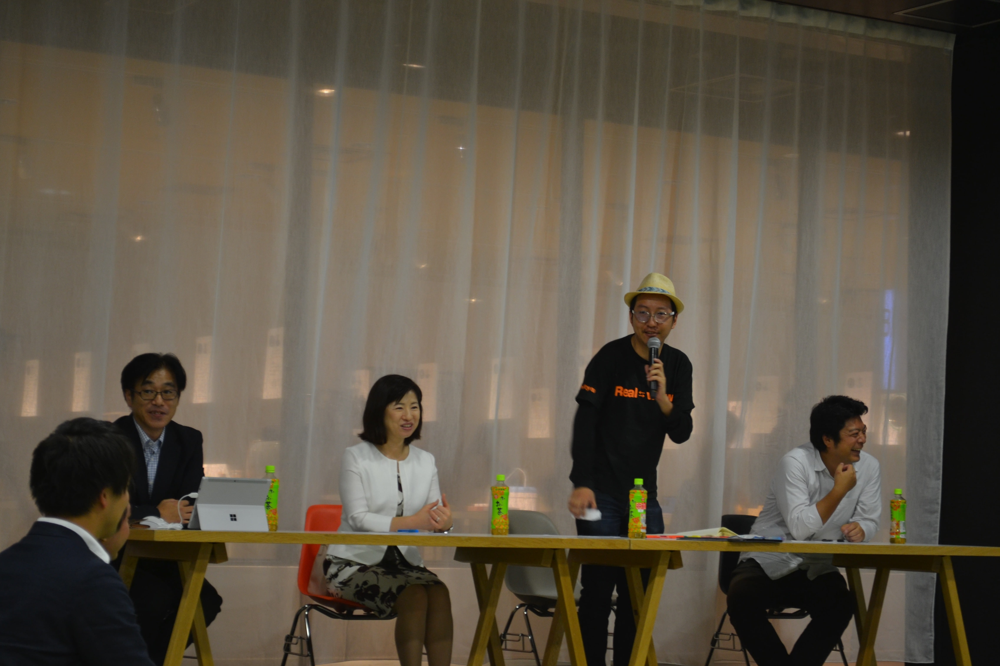
「当意即妙」のコメントと合いの手で会場を盛り上げてくだった審査員の皆さん（右から玉樹さん、河原さん、田中さん、横田さん）
と、ここで主催者の伊藤園さんより副賞の追加が伝えらえました！
優勝チームには、唐津市長の前での直接プレゼン発表の機会が与えられるとともに、東京からの参加者には唐津までの旅費がプレゼントされることに！！
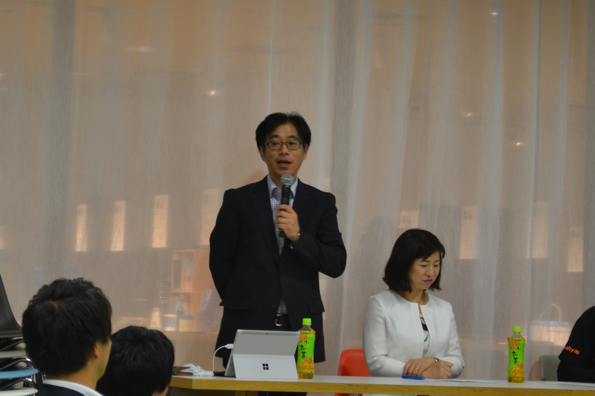
部下からの副賞追加の突然のおねだりに応える部長の姿に、伊藤園さんの懐の深さを感じます。
個性豊かなプレゼン内容
3日間にわたる集大成、プレゼンの順番はB、C、E、D、A。
まずはBチームから。
Bチームのコンセプトは、
「歴史で派手に遊んじゃう城下町、唐津」。
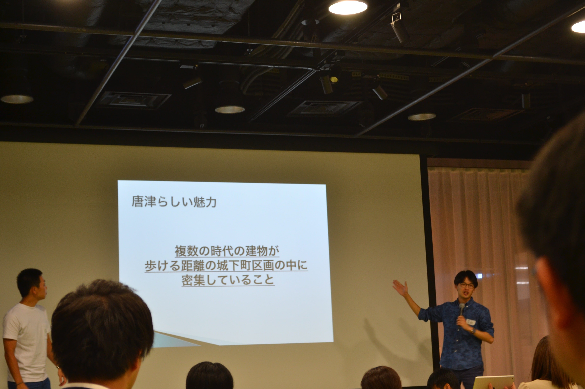
港、城、お祭り、焼き物と、たくさん見所がある反面、「こんな街」とひと言で言えない街になっていないか、という疑問点から、複数の時代の建物が歩ける距離の城下町に密集していることを活かしていき、住む人も訪れる人もみんなでそれを楽しんでしまおう！というアイデアでした。
例えば、レトロな外観の旧唐津銀行（辰野金吾監修）の中に、お金つながりでパチンコ屋を入れたりといった振り切ったことをどんどんやっていき、町全体を盛り上げていく、とのこと。
次がわがCチーム。
「対価は経験！お金をもとめないで暮らしていける町 からつ」
がコンセプトです。
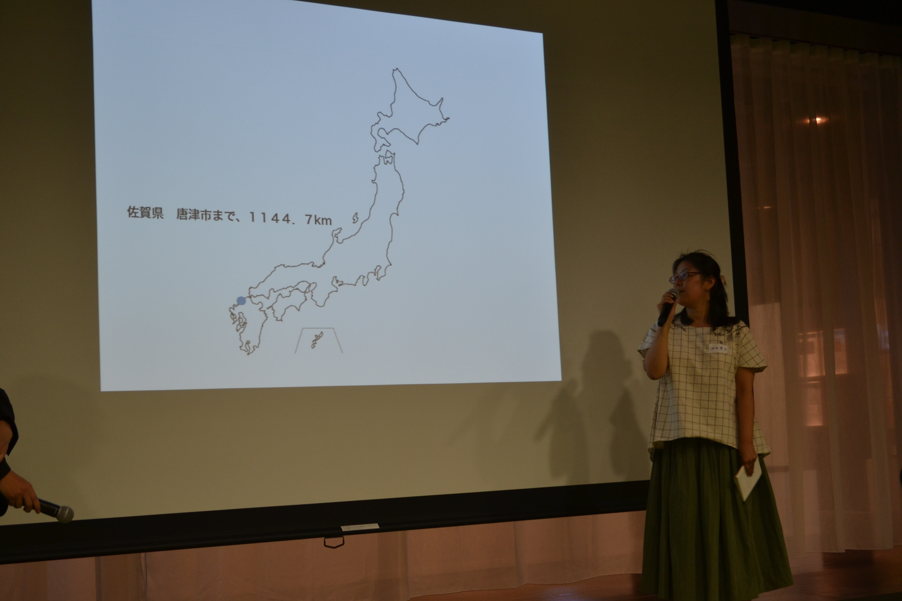
唐津に住んでいる人は地元に誇りと自信を持って生きていることに注目し、唐津在住者が触媒（カタリスト）となって訪れる人に「生活の知恵」や「豊かさの価値変換」「分かち合い文化」を提供できるのではないか、という提案をしたかったのですが、いかんせんこのコンセプトワードにたどり着いたのがプレゼン発表40分前。
これを3分のプレゼンに落とし込むのは難しく、惨憺たる発表になってしまいました……。大反省です。
さて、お次はEチーム。
コンセプトがこちら。
「原始時代から平成まですべての時代と生きる町 唐津」。
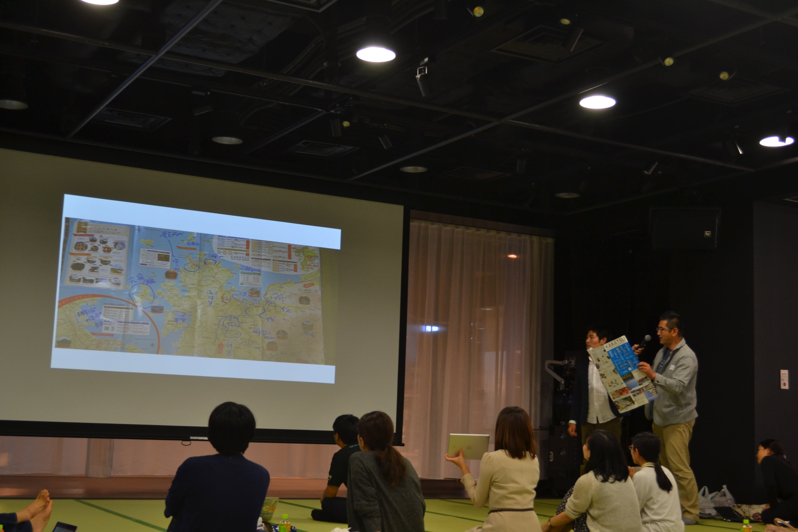
唐津市にはさまざまな観光資源や地域性があり、そこが住みにくさにもつながっていることに注目。唐津市としての統一感にこだわらず、各地域にあるさまざまな時代の遺跡（歴史物）を最大限にアピールして唐津市外から来る人を楽しませることを第一に提案が行われました。
さらに、こちらの提案の中には、「唐津市内の人も各地域の色を明確に出すことで、他の地域とリスペクトし合いながら、町全体を盛り上げていくこともできるようにしていく」という、いま住んでいる人たちが住みやすい町にしていくという内容も盛り込まれていました。
続いて4番手がDチーム。
コンセプトは、
「小さな挑戦者の勝ちを応援するまち からつ」。
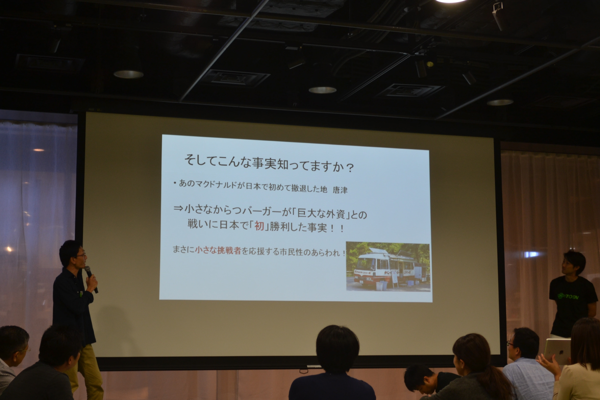
唐津は、日本の稲作発祥の地であり、焼き物発祥の地であり、朝鮮出兵で初めて外国に攻め入った場所であり、有名ハンバーガーチェーンが駅前で初めて撤退した地であるといった「初めて」という部分に着目。
市役所に「はじめての１、２の３課」を設立させ、小学生の企業やスタートアップの補助など「初めてにバンバン挑戦させる」街づくりを行っていく（唐津くじの収益を支援に充てる）といった内容でした。
最後のトリはAチーム。
コンセプトはガラリと変わり、
「熱い大人に会える街 からつ」。
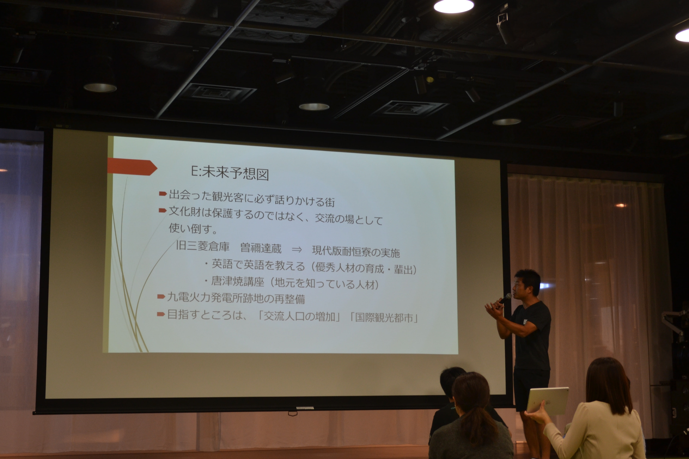
人口減少や主要産業の観光業に関する問題点（食が売りと言いつつ、土日に店舗が閉まっている、インバウンド客に対応できない、ホームページが見づらいetc.）をとりあげ、危機感を表面化。「もてなしを味わえる街、人とつながることで、また来たいと思ってもらえる街、第２の故郷と感じてもらう」といった「来る人にとってこうでありたい」ことを具体的に示し、「交流人口の増加」と「国際観光都市」を目指していくというプレゼンでした。
なかでも「出会った観光客に必ず語りかける街」として、地元愛に溢れた「熱い大人」たちにスポットを当ててあり、唐津人の特性を踏まえたものとなっています。
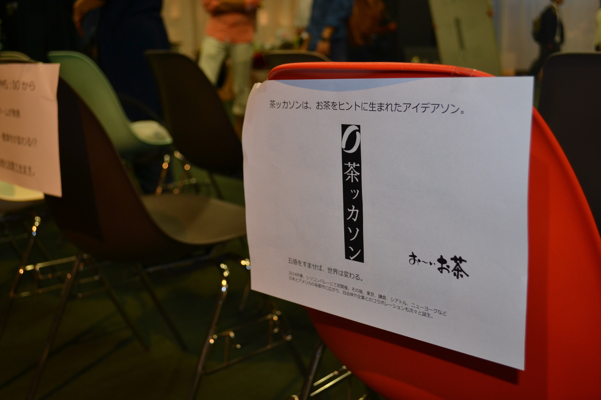
オーディエンスからはたびたび鋭い質問なども飛んできました。
各チームそれぞれ、個性あふれるプレゼン発表の後、参加者とオーディエンスによる投票が行われました。審査員は別室で討議。喧々諤々の熱い議論が繰り広げられたとか。
いよいよ「茶ッカソンin Karatsu」結果発表の時間がやってきました。
オーディエンス賞はDチーム！
なんといってもテンポの良いプレゼンで、「有名ハンバーガーチェーンが初めて撤退した街」というユニークワードで観客の心をつかむと、具体的な施策もあり、わかりやすかったです。自然と拍手が起こり、目に見えて盛り上がっていましたので、当然の結果と大納得。
※オーディエンス賞とは
茶ッカソン参加者と今回のプレゼンを観覧して下さったオーディエンスの皆様に一人一票投票していただき、その集計の結果が一番多かったチームに送る賞です。
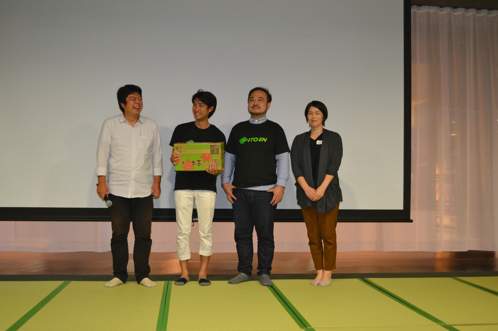
副賞として「お〜いお茶」1年分が贈られました。
そして、栄えある優勝（審査員賞）は、Eチーム！！
「歴史が今につながっていて、今の生活、そしてこれからの生活を発展させていける」「市のそれぞれのエリアの違いを認め合って一緒になることができる。現代までの歴史と異なるエリアの違いを認めることで、市の交流をつくることができる」「外からも唐津の魅力を呼び起こすことができる」「短いコンセプトワードからどれだけ広がりが出るのか、ということも焦点の1つであり、質疑応答が一番盛り上がったということは、これが最初の掘り起こしからの発見・定義が的確だったのでは」
といったことが受賞理由に挙げられました。
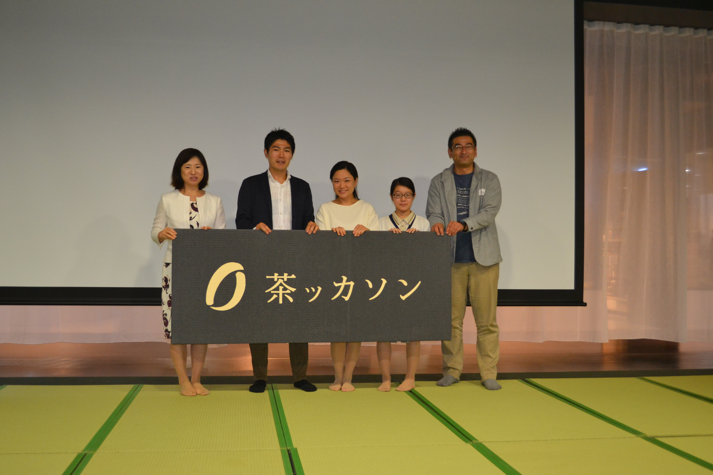
Eチーム、優勝おめでとうございます！！後日Eチームには市長の前でのプレゼンという大仕事が待っています。
最後にそれぞれの審査員の方から総評があったのですが、なかでも玉樹さんが「どのチームも嘘をつかず、とりあえずといったきれいごとなしでここまでやってきたのは異常事態と言ってもいい。こんなに素直な人たちはいない。なんだか誇らしくすら思う」とおっしゃったことが特に印象に残っています。
面白かったのは、最後はオーディエンスの方も「自分だったらこうするのに！」といったことを自然発生的に話されていたこと。それだけ、唐津ついて考えていただける「種」を渋谷にまくことができたのではないか、とうれしく思いますし、ワクワクしました。
個人的には、一発勝負のプレゼンに向かう準備不足が悔やまれてならないわけですが、それも含めて大変得難い経験をさせていただきました。このような「場」をつくりあげてくださった伊藤園や唐津市役所はじめ、審査員の方々、私たちを3日間にわたり導いてくださったファシリテーターの若宮さん、そしてもちろん一緒に走っていけた参加者の皆さんに、この場を借りてお礼を述べさせてください。本当にありがとうございました。
このような機会があれば、ぜひまた参加させていただきたいと思っています！
と、綺麗にまとめるはずだったのですが、なにやらFacebookにて伊藤園さんから気になる発言が！
「茶ッカソンin Karatsuは今後の展開も決まりましたので、ここで気を緩めることなく、走り続けたいと思います」
優勝したEチームの市長前プレゼン以外にも、さらに何かあるのでしょうか⁉︎
「一期一会」で終わらない、新たな茶ッカソンの旅立ちかもしれませんね。
「茶ッカソン」次のフェーズが楽しみです！！
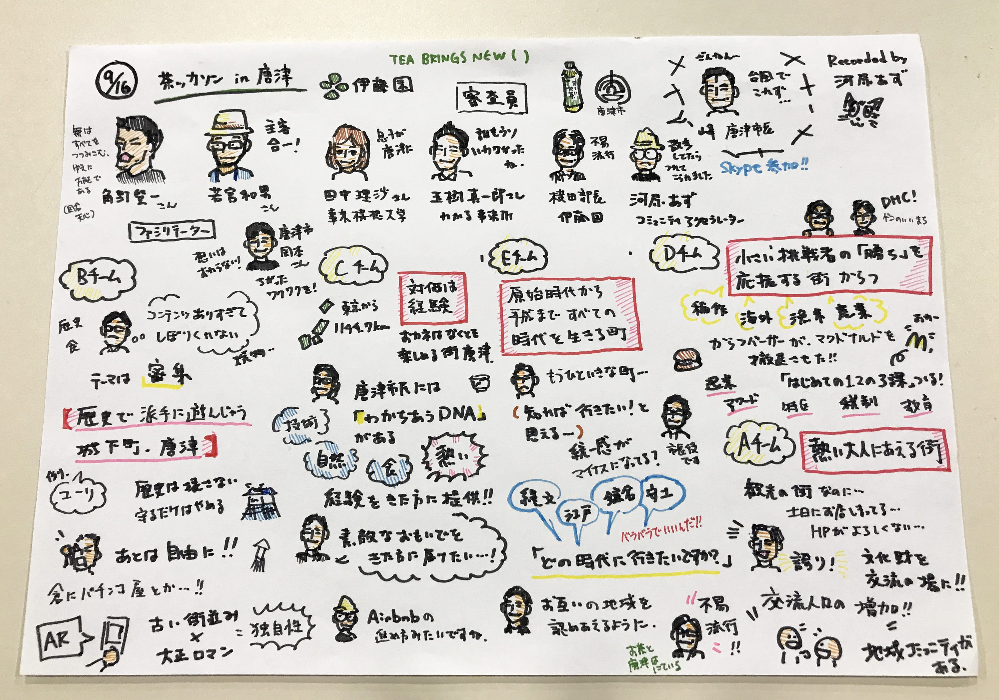